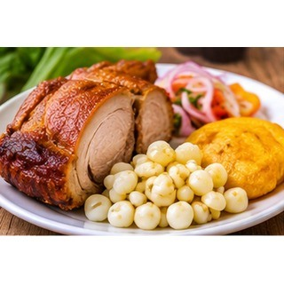

Reseña del cantón
Baba es uno de los cantones de mayor tradición histórica de Los Ríos. Su vida cotidiana está vinculada a la agricultura, especialmente al cultivo de arroz y cacao. Las comunidades rurales conservan costumbres montuvias que se reflejan en las festividades, la gastronomía y el trabajo del campo. Sus paisajes agrícolas forman parte de la identidad local.
Población
45.296 habitantes (Censo de Población y Vivienda 2022).
Parroquias
Baba (cabecera cantonal), Guare e Isla de Bejucal.
Economía y cultura
La vida cotidiana de Baba está relacionada con sus comunidades rurales, los mercados locales y las labores agrícolas. Sus tradiciones montuvias se reflejan en la gastronomía y en las celebraciones familiares y comunitarias.
Alcaldesa
Jael Melo Olvera — período 2023–2027.

Fuente: Directorio oficial de alcaldes y alcaldesas de AME.
Platos típicos
Hornado de cerdo, seco de pato y caldo de gallina criolla.

Estas preparaciones se documentan como parte de la gastronomía local. Su disponibilidad y preparación pueden variar entre comunidades.
Lugares turísticos
Centro histórico de Baba y sus espacios tradicionales; recorridos por el entorno rural y paisajes agrícolas.
Mapa del cantón
Mapa de Google Maps centrado en el cantón: